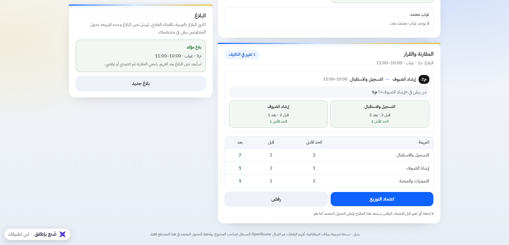
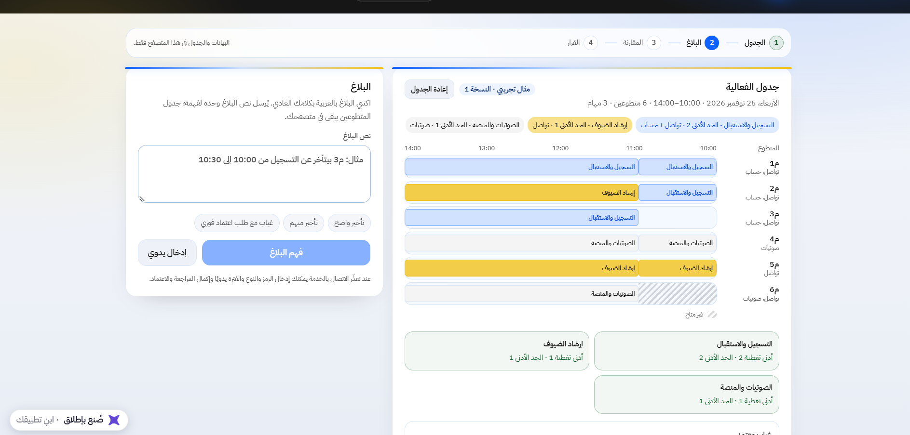

بديل | عرض المشروع
المهمة وخط الأساس · دقيقةبديل
من يغطي التسجيل إذا غاب متطوع؟
تراجع مسؤولة الفعالية المهارات والفترات والعدد المتبقي في كل مهمة. استغرق المثال اليدوي الموثّق في لوحة المشروع ٢٣ دقيقة.
سير العمل · دقيقةمن البلاغ إلى قرار المسؤولة
١. تفتح المسؤولة الجدول وتكتب بلاغ الغياب.
٢. يقترح النموذج فهمًا للبلاغ. تصحّح المسؤولة المتطوع والفترة وتؤكدهما.
٣. يفحص البرنامج المهارة والتوفر والتغطية في المهمتين.
٤. تقارن المسؤولة التوزيعين. عند الاعتماد فقط تُحفظ نسخة جديدة.
التجربة الحية · دقيقةبلاغ واضح من العاشرة إلى الحادية عشرة
افتحي المثال التجريبي في بديل واكتبي «م٣ سيغيب من ١٠:٠٠ إلى ١١:٠٠». أكّدي الفترة واعرضي أثر نقل م٢. من سيبقى في الإرشاد؟

هل يستمر التوزيع بعد الاعتماد؟
يبقى م٥ في الإرشاد. اعتمدي النقل ثم حدّثي الصفحة وافحصي نسخة الجدول. أعيدي التجربة في نافذة خاصة ببلاغ «م٣ بيتأخر شوي»، وحدّدي وقت الوصول ١٠:٣٠.

نجحت ثلاث حالات من أربع
البلاغ الواضح: دقيقتان مع المراجعة مقابل ٢٣ دقيقة للمثال اليدوي المستقل، بحسب سجل المشروع.
البلاغ المبهم: سألت الأداة عن وقت الوصول، ثم تعذّرت التغطية عند ١٠:٣٠ رغم توفر بديل.
خلال ٣٠ يومًا: فحص حساب نصف الساعة، وتجربة زميلة للأداة دون شرح، وقياس عدد البلاغات والوقت الفعلي لكل بلاغ.